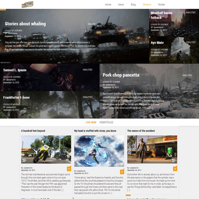
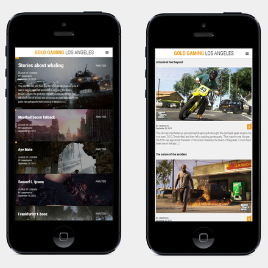
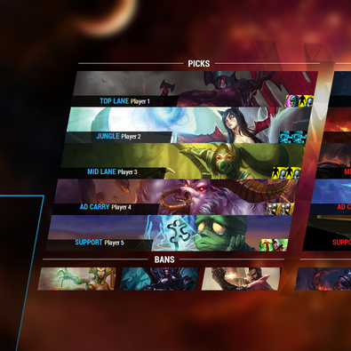

Casey Morris
Front-End Developer with a passion for performance optimization. Employed at Ghost Productions out of Minneapolis. Personal projects include FlipFlap, Zazu and other open source projects.


